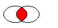
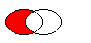
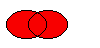

QRegion Class
The QRegion class specifies a clip region for a painter. More...
| Header: | #include <QRegion> |
| qmake: | QT += gui |
Public Types
| enum | RegionType { Rectangle, Ellipse } |
| typedef | const_iterator |
| typedef | const_reverse_iterator |
Public Functions
| QRegion(const QBitmap &bm) | |
| QRegion(QRegion &&other) | |
| QRegion(const QRegion &r) | |
| QRegion(const QPolygon &a, Qt::FillRule fillRule = Qt::OddEvenFill) | |
| QRegion(const QRect &r, QRegion::RegionType t = Rectangle) | |
| QRegion(int x, int y, int w, int h, QRegion::RegionType t = Rectangle) | |
| QRegion() | |
| QRegion & | operator=(QRegion &&other) |
| QRegion & | operator=(const QRegion &r) |
| QRegion::const_iterator | begin() const |
| QRect | boundingRect() const |
| QRegion::const_iterator | cbegin() const |
| QRegion::const_iterator | cend() const |
| bool | contains(const QPoint &p) const |
| bool | contains(const QRect &r) const |
| QRegion::const_reverse_iterator | crbegin() const |
| QRegion::const_reverse_iterator | crend() const |
| QRegion::const_iterator | end() const |
| QRegion | intersected(const QRegion &r) const |
| QRegion | intersected(const QRect &rect) const |
| bool | intersects(const QRegion ®ion) const |
| bool | intersects(const QRect &rect) const |
| bool | isEmpty() const |
| bool | isNull() const |
| QRegion::const_reverse_iterator | rbegin() const |
| int | rectCount() const |
| QRegion::const_reverse_iterator | rend() const |
| void | setRects(const QRect *rects, int number) |
| QRegion | subtracted(const QRegion &r) const |
| void | swap(QRegion &other) |
| void | translate(int dx, int dy) |
| void | translate(const QPoint &point) |
| QRegion | translated(int dx, int dy) const |
| QRegion | translated(const QPoint &p) const |
| QRegion | united(const QRegion &r) const |
| QRegion | united(const QRect &rect) const |
| QRegion | xored(const QRegion &r) const |
| QVariant | operator QVariant() const |
| bool | operator!=(const QRegion &other) const |
| const QRegion | operator&(const QRegion &r) const |
| const QRegion | operator&(const QRect &r) const |
| QRegion & | operator&=(const QRegion &r) |
| QRegion & | operator&=(const QRect &r) |
| const QRegion | operator+(const QRegion &r) const |
| const QRegion | operator+(const QRect &r) const |
| QRegion & | operator+=(const QRegion &r) |
| QRegion & | operator+=(const QRect &rect) |
| const QRegion | operator-(const QRegion &r) const |
| QRegion & | operator-=(const QRegion &r) |
| bool | operator==(const QRegion &r) const |
| const QRegion | operator^(const QRegion &r) const |
| QRegion & | operator^=(const QRegion &r) |
| const QRegion | operator|(const QRegion &r) const |
| QRegion & | operator|=(const QRegion &r) |
Related Non-Members
| QDataStream & | operator<<(QDataStream &s, const QRegion &r) |
| QDataStream & | operator>>(QDataStream &s, QRegion &r) |
Detailed Description
QRegion is used with QPainter::setClipRegion() to limit the paint area to what needs to be painted. There is also a QWidget::repaint() function that takes a QRegion parameter. QRegion is the best tool for minimizing the amount of screen area to be updated by a repaint.
This class is not suitable for constructing shapes for rendering, especially as outlines. Use QPainterPath to create paths and shapes for use with QPainter.
QRegion is an implicitly shared class.
Creating and Using Regions
A region can be created from a rectangle, an ellipse, a polygon or a bitmap. Complex regions may be created by combining simple regions using united(), intersected(), subtracted(), or xored() (exclusive or). You can move a region using translate().
You can test whether a region isEmpty() or if it contains() a QPoint or QRect. The bounding rectangle can be found with boundingRect().
Iteration over the region (with begin(), end(), or C++11 ranged-for loops) gives a decomposition of the region into rectangles.
Example of using complex regions:
void MyWidget::paintEvent(QPaintEvent *) { QRegion r1(QRect(100, 100, 200, 80), // r1: elliptic region QRegion::Ellipse); QRegion r2(QRect(100, 120, 90, 30)); // r2: rectangular region QRegion r3 = r1.intersected(r2); // r3: intersection QPainter painter(this); painter.setClipRegion(r3); ... // paint clipped graphics }
See also QPainter::setClipRegion(), QPainter::setClipRect(), and QPainterPath.
Member Type Documentation
enum QRegion::RegionType
Specifies the shape of the region to be created.
| Constant | Value | Description |
|---|---|---|
QRegion::Rectangle | 0 | the region covers the entire rectangle. |
QRegion::Ellipse | 1 | the region is an ellipse inside the rectangle. |
typedef QRegion::const_iterator
An iterator over the non-overlapping rectangles that make up the region.
The union of all the rectangles is equal to the original region.
QRegion does not offer mutable iterators.
This typedef was introduced in Qt 5.8.
typedef QRegion::const_reverse_iterator
A reverse iterator over the non-overlapping rectangles that make up the region.
The union of all the rectangles is equal to the original region.
QRegion does not offer mutable iterators.
This typedef was introduced in Qt 5.8.
Member Function Documentation
QRegion::QRegion(const QBitmap &bm)
Constructs a region from the bitmap bm.
The resulting region consists of the pixels in bitmap bm that are Qt::color1, as if each pixel was a 1 by 1 rectangle.
This constructor may create complex regions that will slow down painting when used. Note that drawing masked pixmaps can be done much faster using QPixmap::setMask().
QRegion::QRegion(QRegion &&other)
Move-constructs a new region from region other. After the call, other is null.
This function was introduced in Qt 5.7.
See also isNull().
QRegion::QRegion(const QRegion &r)
Constructs a new region which is equal to region r.
QRegion::QRegion(const QPolygon &a, Qt::FillRule fillRule = Qt::OddEvenFill)
Constructs a polygon region from the point array a with the fill rule specified by fillRule.
If fillRule is Qt::WindingFill, the polygon region is defined using the winding algorithm; if it is Qt::OddEvenFill, the odd-even fill algorithm is used.
Warning: This constructor can be used to create complex regions that will slow down painting when used.
QRegion::QRegion(const QRect &r, QRegion::RegionType t = Rectangle)
This is an overloaded function.
Create a region based on the rectange r with region type t.
If the rectangle is invalid a null region will be created.
See also QRegion::RegionType.
QRegion::QRegion(int x, int y, int w, int h, QRegion::RegionType t = Rectangle)
Constructs a rectangular or elliptic region.
If t is Rectangle, the region is the filled rectangle (x, y, w, h). If t is Ellipse, the region is the filled ellipse with center at (x + w / 2, y + h / 2) and size (w ,h).
QRegion::QRegion()
Constructs an empty region.
See also isEmpty().
QRegion &QRegion::operator=(QRegion &&other)
Move-assigns other to this QRegion instance.
This function was introduced in Qt 5.2.
QRegion &QRegion::operator=(const QRegion &r)
Assigns r to this region and returns a reference to the region.
QRegion::const_iterator QRegion::begin() const
Returns a const_iterator pointing to the beginning of the range of non-overlapping rectangles that make up the region.
The union of all the rectangles is equal to the original region.
This function was introduced in Qt 5.8.
See also rbegin(), cbegin(), and end().
QRect QRegion::boundingRect() const
Returns the bounding rectangle of this region. An empty region gives a rectangle that is QRect::isNull().
QRegion::const_iterator QRegion::cbegin() const
Same as begin().
This function was introduced in Qt 5.8.
QRegion::const_iterator QRegion::cend() const
Same as end().
This function was introduced in Qt 5.8.
bool QRegion::contains(const QPoint &p) const
Returns true if the region contains the point p; otherwise returns false.
bool QRegion::contains(const QRect &r) const
This is an overloaded function.
Returns true if the region overlaps the rectangle r; otherwise returns false.
QRegion::const_reverse_iterator QRegion::crbegin() const
Same as rbegin().
This function was introduced in Qt 5.8.
QRegion::const_reverse_iterator QRegion::crend() const
Same as rend().
This function was introduced in Qt 5.8.
QRegion::const_iterator QRegion::end() const
Returns a const_iterator pointing to one past the end of non-overlapping rectangles that make up the region.
The union of all the rectangles is equal to the original region.
This function was introduced in Qt 5.8.
See also rend(), cend(), and begin().
QRegion QRegion::intersected(const QRegion &r) const
Returns a region which is the intersection of this region and r.

The figure shows the intersection of two elliptical regions.
This function was introduced in Qt 4.2.
See also subtracted(), united(), and xored().
QRegion QRegion::intersected(const QRect &rect) const
Returns a region which is the intersection of this region and the given rect.
This function was introduced in Qt 4.4.
See also subtracted(), united(), and xored().
bool QRegion::intersects(const QRegion ®ion) const
Returns true if this region intersects with region, otherwise returns false.
This function was introduced in Qt 4.2.
bool QRegion::intersects(const QRect &rect) const
Returns true if this region intersects with rect, otherwise returns false.
This function was introduced in Qt 4.2.
bool QRegion::isEmpty() const
Returns true if the region is empty; otherwise returns false. An empty region is a region that contains no points.
Example:
QRegion r1(10, 10, 20, 20); r1.isEmpty(); // false QRegion r3; r3.isEmpty(); // true QRegion r2(40, 40, 20, 20); r3 = r1.intersected(r2); // r3: intersection of r1 and r2 r3.isEmpty(); // true r3 = r1.united(r2); // r3: union of r1 and r2 r3.isEmpty(); // false
bool QRegion::isNull() const
Returns true if the region is empty; otherwise returns false. An empty region is a region that contains no points. This function is the same as isEmpty
This function was introduced in Qt 5.0.
See also isEmpty().
QRegion::const_reverse_iterator QRegion::rbegin() const
Returns a const_reverse_iterator pointing to the beginning of the range of non-overlapping rectangles that make up the region.
The union of all the rectangles is equal to the original region.
This function was introduced in Qt 5.8.
See also begin(), crbegin(), and rend().
int QRegion::rectCount() const
Returns the number of rectangles that this region is composed of. Same as end() - begin().
This function was introduced in Qt 4.6.
QRegion::const_reverse_iterator QRegion::rend() const
Returns a const_reverse_iterator pointing to one past the end of the range of non-overlapping rectangles that make up the region.
The union of all the rectangles is equal to the original region.
This function was introduced in Qt 5.8.
See also end(), crend(), and rbegin().
void QRegion::setRects(const QRect *rects, int number)
Sets the region using the array of rectangles specified by rects and number. The rectangles must be optimally Y-X sorted and follow these restrictions:
- The rectangles must not intersect.
- All rectangles with a given top coordinate must have the same height.
- No two rectangles may abut horizontally (they should be combined into a single wider rectangle in that case).
- The rectangles must be sorted in ascending order, with Y as the major sort key and X as the minor sort key.
See also rects().
QRegion QRegion::subtracted(const QRegion &r) const
Returns a region which is r subtracted from this region.

The figure shows the result when the ellipse on the right is subtracted from the ellipse on the left (left - right).
This function was introduced in Qt 4.2.
See also intersected(), united(), and xored().
void QRegion::swap(QRegion &other)
Swaps region other with this region. This operation is very fast and never fails.
This function was introduced in Qt 4.8.
void QRegion::translate(int dx, int dy)
Translates (moves) the region dx along the X axis and dy along the Y axis.
void QRegion::translate(const QPoint &point)
This is an overloaded function.
Translates the region point.x() along the x axis and point.y() along the y axis, relative to the current position. Positive values move the region to the right and down.
Translates to the given point.
QRegion QRegion::translated(int dx, int dy) const
Returns a copy of the region that is translated dx along the x axis and dy along the y axis, relative to the current position. Positive values move the region to the right and down.
This function was introduced in Qt 4.1.
See also translate().
QRegion QRegion::translated(const QPoint &p) const
This is an overloaded function.
Returns a copy of the regtion that is translated p.x() along the x axis and p.y() along the y axis, relative to the current position. Positive values move the rectangle to the right and down.
This function was introduced in Qt 4.1.
See also translate().
QRegion QRegion::united(const QRegion &r) const
Returns a region which is the union of this region and r.

The figure shows the union of two elliptical regions.
This function was introduced in Qt 4.2.
See also intersected(), subtracted(), and xored().
QRegion QRegion::united(const QRect &rect) const
Returns a region which is the union of this region and the given rect.
This function was introduced in Qt 4.4.
See also intersected(), subtracted(), and xored().
QRegion QRegion::xored(const QRegion &r) const
Returns a region which is the exclusive or (XOR) of this region and r.
The figure shows the exclusive or of two elliptical regions.
This function was introduced in Qt 4.2.
See also intersected(), united(), and subtracted().
QVariant QRegion::operator QVariant() const
Returns the region as a QVariant
bool QRegion::operator!=(const QRegion &other) const
Returns true if this region is different from the other region; otherwise returns false.
const QRegion QRegion::operator&(const QRegion &r) const
Applies the intersected() function to this region and r. r1&r2 is equivalent to r1.intersected(r2).
See also intersected().
const QRegion QRegion::operator&(const QRect &r) const
This is an overloaded function.
This function was introduced in Qt 4.4.
QRegion &QRegion::operator&=(const QRegion &r)
Applies the intersected() function to this region and r and assigns the result to this region. r1&=r2 is equivalent to r1 = r1.intersected(r2).
See also intersected().
QRegion &QRegion::operator&=(const QRect &r)
This is an overloaded function.
This function was introduced in Qt 4.4.
const QRegion QRegion::operator+(const QRegion &r) const
Applies the united() function to this region and r. r1+r2 is equivalent to r1.united(r2).
See also united() and operator|().
const QRegion QRegion::operator+(const QRect &r) const
This is an overloaded function.
This function was introduced in Qt 4.4.
QRegion &QRegion::operator+=(const QRegion &r)
Applies the united() function to this region and r and assigns the result to this region. r1+=r2 is equivalent to r1 = r1.united(r2).
See also intersected().
QRegion &QRegion::operator+=(const QRect &rect)
Returns a region that is the union of this region with the specified rect.
See also united().
const QRegion QRegion::operator-(const QRegion &r) const
Applies the subtracted() function to this region and r. r1-r2 is equivalent to r1.subtracted(r2).
See also subtracted().
QRegion &QRegion::operator-=(const QRegion &r)
Applies the subtracted() function to this region and r and assigns the result to this region. r1-=r2 is equivalent to r1 = r1.subtracted(r2).
See also subtracted().
bool QRegion::operator==(const QRegion &r) const
Returns true if the region is equal to r; otherwise returns false.
const QRegion QRegion::operator^(const QRegion &r) const
Applies the xored() function to this region and r. r1^r2 is equivalent to r1.xored(r2).
See also xored().
QRegion &QRegion::operator^=(const QRegion &r)
Applies the xored() function to this region and r and assigns the result to this region. r1^=r2 is equivalent to r1 = r1.xored(r2).
See also xored().
const QRegion QRegion::operator|(const QRegion &r) const
Applies the united() function to this region and r. r1|r2 is equivalent to r1.united(r2).
See also united() and operator+().
QRegion &QRegion::operator|=(const QRegion &r)
Applies the united() function to this region and r and assigns the result to this region. r1|=r2 is equivalent to r1 = r1.united(r2).
See also united().
Related Non-Members
QDataStream &operator<<(QDataStream &s, const QRegion &r)
Writes the region r to the stream s and returns a reference to the stream.
See also Format of the QDataStream operators.
QDataStream &operator>>(QDataStream &s, QRegion &r)
Reads a region from the stream s into r and returns a reference to the stream.
See also Format of the QDataStream operators.